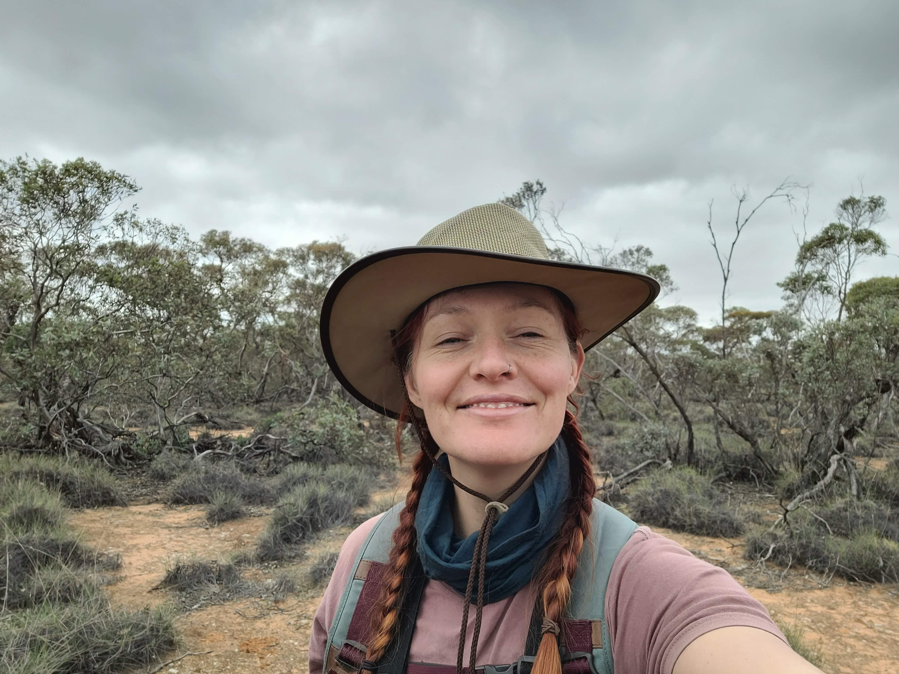
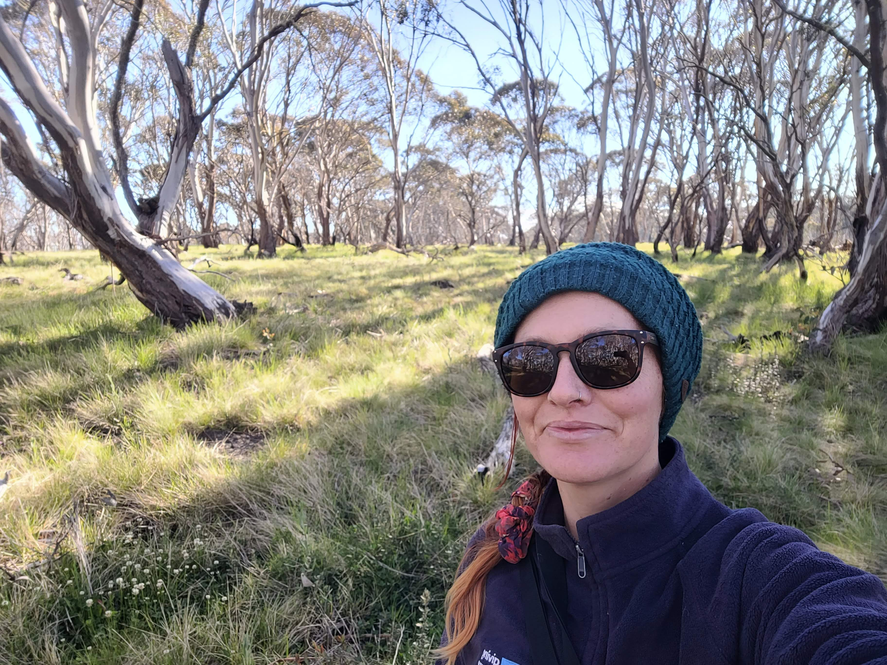
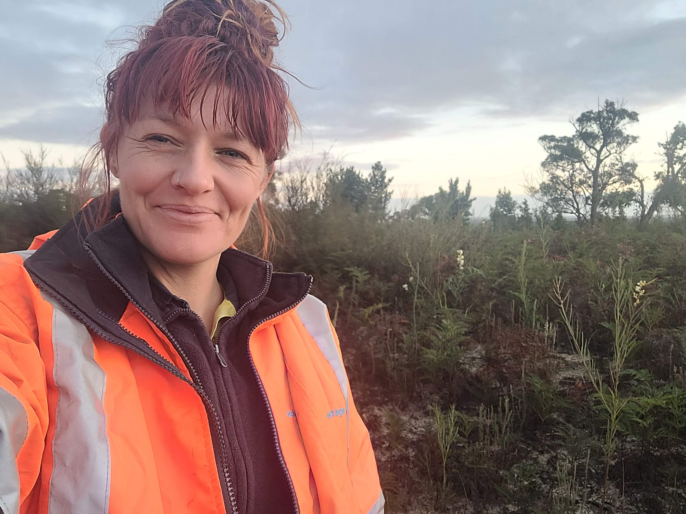
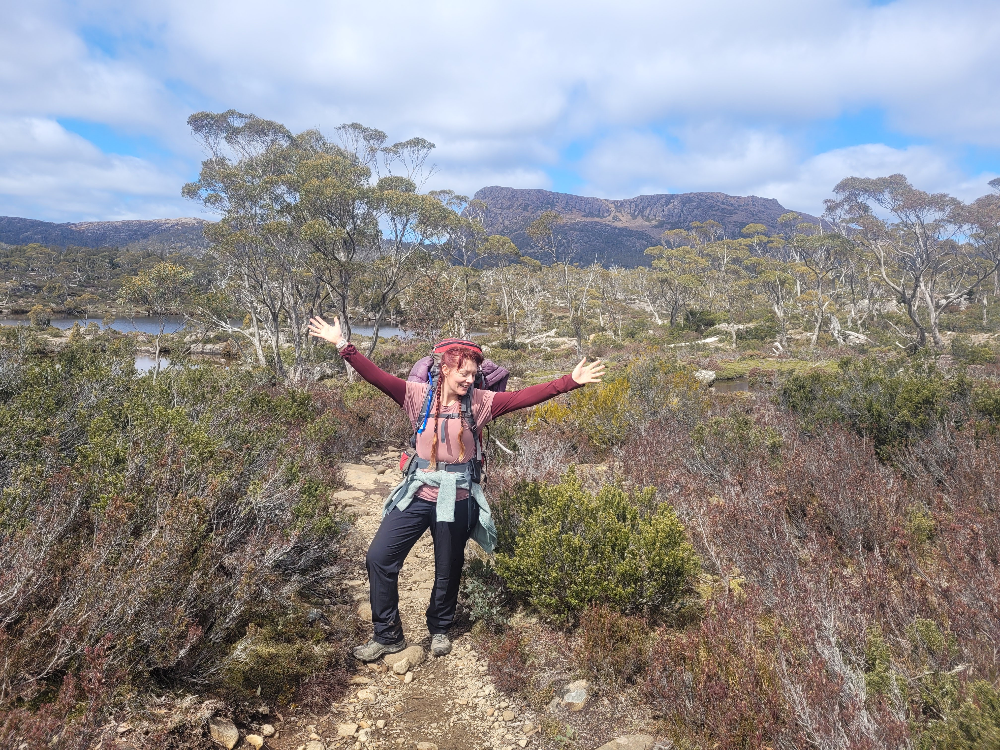
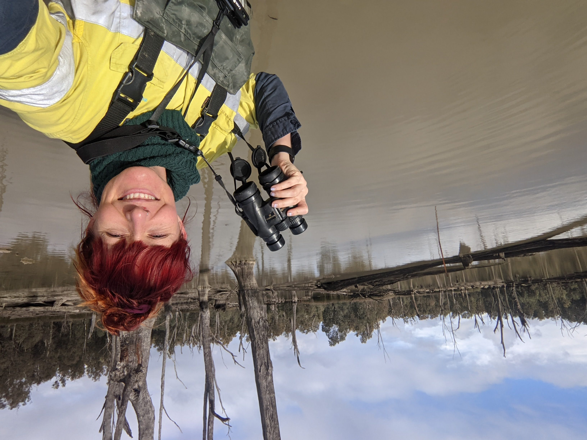
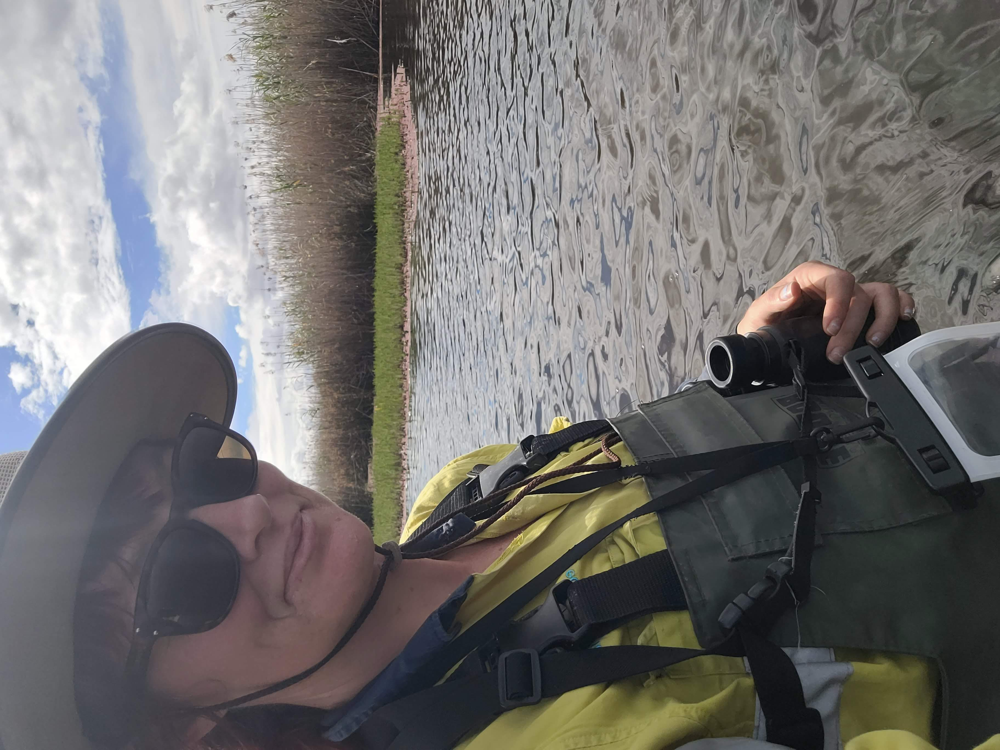
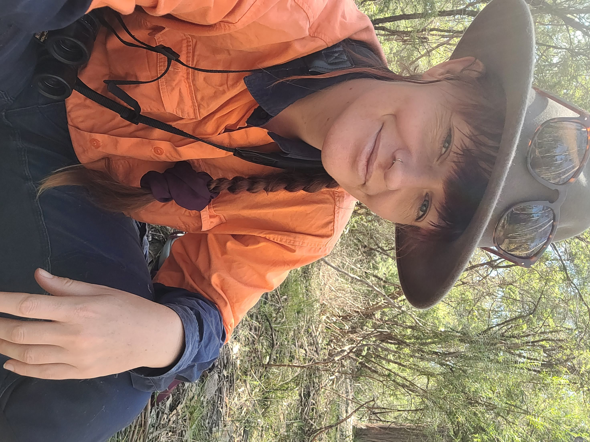
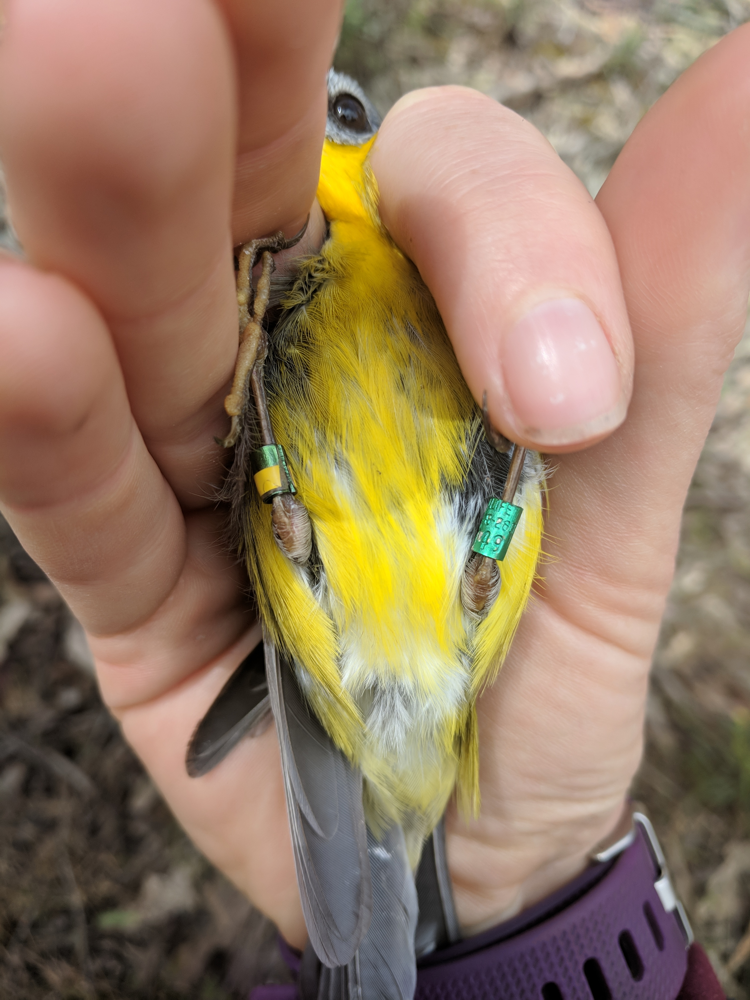

Wominjeka! 👋
I am an ecologist who loves birds. I work on projects that align with my values—that is, projects that protect nature and help keep people connected with it.
Projects
Current Research
I submitted my PhD in late 2025. I worked with the Wildlife Genetics Management Group at Monash University. Add your current research details here.
Community Programs
[Add your community engagement details here.]
Resume
Experience
[Add your work experience here]
Education
[Add your education details here]
Publications
Austin, L. M., Amos, J. N., Robledo‐Ruiz, D. A., Zhou, J. W., Clarke, R. H., Pavlova, A., & Sunnucks, P. (2025). Random Mating in a Hybrid Zone Between Two Putative Climate‐Adapted Bird Lineages With Predicted Mitonuclear Incompatibilities. Molecular Ecology, 34(2), e17612.
Low, G.W., Pavlova, A., Gan, H.M., Ko, M.C., Sadanandan, K.R., Lee, Y.P., Amos, J.N., Austin, L., Falk, S., Dowling, D.K. and Sunnucks, P. (2024). Accelerated differentiation of neo-W nuclear-encoded mitochondrial genes between two climate-associated bird lineages signals potential co-evolution with mitogenomes. Heredity, 133(5), 342–354.
Robledo‐Ruiz, D.A., Austin, L., Amos, J.N., Castrejón‐Figueroa, J., Harley, D.K., Magrath, M.J., Sunnucks, P. and Pavlova, A. (2025). Easy‐to‐use R functions to separate reduced‐representation genomic datasets into sex‐linked and autosomal loci, and conduct sex assignment. Molecular Ecology Resources, 25(5), e13844.
Kvistad, L., Falk, S. and Austin, L. (2022). Widespread genomic signatures of reproductive isolation and sex-specific selection in the Eastern Yellow Robin, Eopsaltria australis. G3, 12(9), jkac145.
Shields, J. & Austin, L.M. (2018). Monitoring invasive and threatened aquatic amphibians, mammals, and birds. In Using detection dogs to monitor aquatic ecosystem health and protect aquatic resources (pp. 71–117). Springer.
Here are some photos of me in the bush—sometimes for work, sometimes for fun. Sometimes the line is blurry.











All birds pictured were handled with the required ethics and research permits.